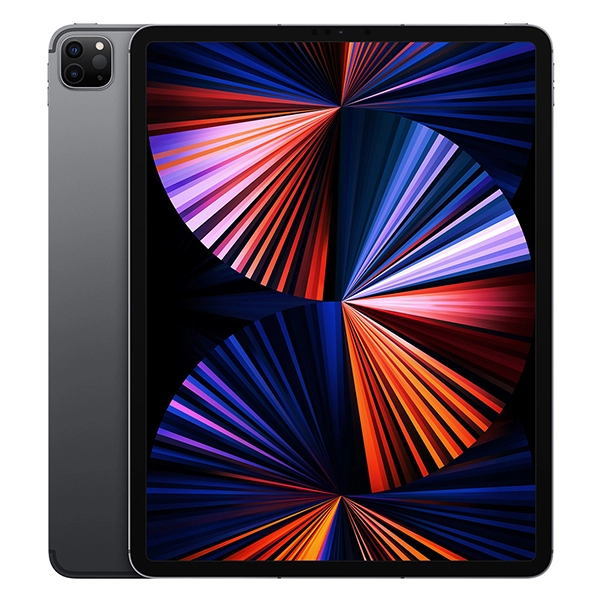

Ipad Pro Generasi ke-5 (12.9-inch)

Warna
Kapasitas1
- 128 GB
- 256 GB
- 512 GB
- 1 TB
Ukuran dan Berat2
- Model Wi-Fi
- Lebar: 214,9 mm
- Tinggi: 280,6 mm
- Tebal: 5,9 mm
- Berat: 641 gram
- Model Wi-Fi + Cellular
- Lebar: 214,9 mm
- Tinggi: 280,6 mm
- Tebal: 5,9 mm
- Berat: 643 gram
Tombol dan Konektor
- Lima mikrofon
- Audio empat speaker
- Nyala/Mati - Tidur/Bangun
- Volume naik/turun
- Konektor USB‑C
- Smart Connector
- Wadah Nano‑SIM
- Konektor magnetis
Isi Kotak
- iPad Pro
- Kabel Pengisi Daya USB-C (1 meter)
- Adaptor Daya USB-C 18W
Layar
- Layar Liquid Retina
- Layar Multi-Touch dengan lampu latar LED 12,9 inci (diagonal) dengan teknologi IPS
- Resolusi 2732 x 2048 dengan 264 piksel per inci (ppi)
- Teknologi ProMotion
- Layar warna luas (P3)
- Layar True Tone
- Lapisan oleophobic anti sidik jari
- Layar yang dilaminasi penuh
- Lapisan anti reflektif
- Reflektivitas 1,8%
- Kecerahan 600 nit
- Mendukung Apple Pencil (generasi ke-2)
Layar iPad Pro 12,9 inci memiliki sudut melengkung yang mengikuti desain lekukan yang indah, dan semua sudut ini berada di dalam bidang persegi standar. Jika diukur sebagai persegi standar, layarnya berukuran 12,9 inci secara diagonal (area bidang layar berukuran lebih kecil).
Chip
- Chip A12Z Bionic dengan arsitektur 64 bit
- Neural Engine
Kamera
- Wide: 12 MP, bukaan ƒ/1.8
- Ultra Wide: 10 MP, bukaan ƒ/2.4, dan bidang pandang 125°
- Zoom optik 2x; zoom digital hingga 5x
- Lensa lima elemen (Wide dan Ultra Wide)
- Flash True Tone lebih terang
- Panorama (hingga 63 MP)
- Penutup lensa kristal safir
- Sensor penerangan sisi belakang
- Filter IR hibrida
- Fokus otomatis dengan Focus Pixels (Wide)
- Ketuk untuk fokus dengan Focus Pixels (Wide)
- Pengambilan foto dan Live Photo dengan rentang warna luas
- Kontrol pencahayaan
- Pengurangan noise
- Smart HDR untuk foto
- Penstabilan gambar otomatis
- Mode beruntun
- Mode timer
- Penanda lokasi foto
- Format gambar yang diambil: HEIF dan JPEG
Perekaman Video
- Mampu merekam video 4K pada 24 fps, 30 fps, atau 60 fps (Wide); 60 fps (Ultra Wide)
- Mampu merekam video HD 1080p pada kecepatan 30 fps atau 60 fps
- Mampu merekam video HD 720p pada kecepatan 30 fps
- Flash True Tone lebih terang
- Dukungan video slo-mo untuk 1080p pada kecepatan 120 fps atau 240 fps (Wide); 240 fps (Ultra Wide)
- Video selang waktu dengan penstabilan
- Penstabilan video sinematik (1080p dan 720p)
- Video fokus otomatis kontinu
- Pengurangan noise
- Zoom pemutaran
- Penanda lokasi video
- Format video yang direkam: HEVC dan H.264
Kamera TrueDepth
- Foto 7 MP
- Mode Potret
- Pencahayaan Potret
- Animoji dan Memoji
- Mampu merekam video HD 1080p pada kecepatan 30 fps atau 60 fps
- Retina Flash
- Bukaan ƒ/2.2
- Pengambilan foto dan Live Photo dengan rentang warna luas
- Smart HDR
- Sensor penerangan sisi belakang
- Penstabilan gambar otomatis
- Mode beruntun
- Kontrol pencahayaan
- Mode timer
Panggilan Video3
- Video FaceTime
- iPad ke segala perangkat berkemampuan FaceTime melalui Wi-Fi atau seluler
Panggilan Audio3
- Audio FaceTime
- iPad ke segala perangkat berkemampuan FaceTime melalui Wi-Fi atau seluler
Speaker
Mikrofon
- Lima mikrofon dengan kualitas studio untuk panggilan, perekaman video, dan perekaman audio
Seluler dan Nirkabel
- Semua model
Wi‑Fi 6 802.11ax; band ganda simultan (2,4 GHz dan 5 GHz); HT80 dengan MIMO
Teknologi Bluetooth 5.0
- Model Wi-Fi + Cellular
UMTS/ HSPA/ HSPA+/ DC‑HSDPA (850, 900, 1700/2100, 1900, 2100 MHz); GSM/EDGE (850, 900, 1800, 1900 MHz)
LTE kelas Gigabit (Model A2068 dan A2069: band 1, 2, 3, 4, 5, 7, 8, 12, 13, 14, 17, 18, 19, 20, 25, 26, 29, 30, 34, 38, 39, 40, 41, 42, 46, 48, 66, 71)4
Hanya data5
eSIM6
Selengkapnya tentang data seluler
Kartu SIM
- Nano‑SIM (mendukung Apple SIM6)
- eSIM6
Lokasi
- Semua model
- Kompas digital
- Wi-Fi
- Mikrolokasi iBeacon
- Model Wi-Fi + Cellular
Sensor
- Face ID
- LiDAR Scanner
- Gyro tiga sumbu
- Akselerometer
- Barometer
- Sensor cahaya sekitar
Face ID
- Hadir berkat kamera TrueDepth untuk pengenalan wajah
- Buka kunci iPad
- Amankan data pribadi dalam aplikasi
- Lakukan pembelian dari iTunes Store dan App Store
Pengisian Daya dan Ekspansi
Daya dan Baterai7
- iPad Pro 12,9 inci
- Baterai lithium-polymer isi ulang bawaan 36,71 watt jam
- Semua model
- Hingga 10 jam untuk menjelajahi web melalui Wi-Fi atau menonton video
- Pengisian daya melalui adaptor daya atau USB-C ke sistem komputer
- Model Wi-Fi + Cellular
- Hingga 9 jam untuk menjelajahi web menggunakan jaringan data seluler
Sistem Operasi
iPadOS 14
iPadOS hadir dengan fitur canggih dan aplikasi bawaan yang dirancang untuk memanfaatkan kemampuan unik iPad.
Lihat apa yang baru di iPadOS 14
Aksesibilitas
Fitur aksesibilitas membantu penyandang disabilitas memaksimalkan iPad Pro baru mereka. Dengan dukungan bawaan untuk penglihatan, pendengaran, mobilitas, dan pembelajaran, Anda bisa membuat dan melakukan berbagai hal luar biasa. Pelajari lebih lanjut mengenai Aksesibilitas
Fitur-fitur meliputi:
- VoiceOver
- Zoom
- Pembesar
- Dikte
- Kontrol Pengalihan
- Teks Tertulis
- AssistiveTouch
- Ucapkan Layar
Aplikasi Bawaan
- App Store
- Buku
- Kalender
- Kamera
- Jam
- Kontak
- FaceTime
- File
- Lacak
- Rumah
- iTunes Store
- Mail
- Peta
- Pengukur
- Pesan
- Musik
- Catatan
- Photo Booth
- Foto
- Podcasts
- Pengingat
- Safari
- Pengaturan
- Pintasan
- Saham
- Kiat
- TV
- Memo Suara
Aplikasi Gratis dari Apple
Pages, Numbers, Keynote, iMovie, GarageBand, iTunes U, dan Clips sudah terinstal di iPad.
- Pages
- Numbers
- Keynote
- iMovie
- GarageBand
- Memo Musik
- Clips
- Swift Playgrounds
- Dukungan
Persyaratan Sistem
- ID Apple (diperlukan untuk beberapa fitur)
- Akses Internet8
- Penyelarasan dengan Mac atau PC memerlukan:
- macOS Catalina 10.15 menggunakan Finder
- macOS El Capitan 10.11.6 sampai macOS Mojave 10.14.6 menggunakan iTunes 12.8 atau lebih baru
- Windows 7 atau lebih baru menggunakan iTunes 12.10 atau lebih baru (unduh gratis dari apple.com/id/itunes/download/)
Bahasa
- Dukungan bahasa
Inggris (Australia, Inggris, AS), Tionghoa (Sederhana, Tradisional, Hong Kong Tradisional), Prancis (Kanada, Prancis), Jerman, Italia, Jepang, Korea, Spanyol (Amerika Latin, Meksiko, Spanyol), Arab, Katalan, Kroasia, Ceko, Denmark, Belanda, Finlandia, Yunani, Ibrani, Hindi, Hungaria, Indonesia, Melayu, Norwegia, Polandia, Portugis (Brasil, Portugal), Rumania, Rusia, Slovakia, Swedia, Thai, Turki, Ukraina, Vietnam
- Dukungan papan ketik QuickType
Inggris (Australia, Kanada, India, Singapura, Inggris, AS), Mandarin - Sederhana (Tulisan Tangan, Pinyin QWERTY, Pinyin 10 Key, Shuangpin, Stroke), Mandarin - Tradisional (Cangjie, Tulisan Tangan, Pinyin QWERTY, Pinyin 10 Key, Shuangpin, Stroke, Sucheng, Zhuyin), Prancis (Belgia, Kanada, Prancis, Swiss), Jerman (Austria, Jerman, Swiss), Italia, Jepang (Kana, Romaji), Korea (2-Set, 10 Key), Spanyol (Amerika Latin, Meksiko, Spanyol), Albania, Arab (Standar Modern, Najdi), Armenia, Assam, Azerbaijan, Bengali, Belarusia, Bodo, Bulgaria, Burma, Kanton - Tradisional (Cangjie, Tulisan Tangan, Stroke, Sucheng), Katalan, Cherokee, Kroasia, Ceko, Denmark, Dhivehi, Dogri, Belanda, Emoji, Estonia, Faroese, Filipina, Finlandia, Flemish, Georgia, Yunani, Gujarati, Hawaii, Ibrani, Hindi (Devanagari, Latin, Transliterasi), Hungaria, Islandia, Indonesia, Irlandia, Kannada, Kashmir (Arab, Devanagari), Kazakh, Khmer, Konkani (Devanagari), Kurdi (Arab, Latin), Kirgistan, Lao, Latvia, Lituania, Makedonia, Maithili (Bengali), Melayu (Arab, Latin), Malayalam, Malta, Manipuri (Bengali, Meetei Mayek), Maori, Marathi, Mongolia, Nepal, Norwegia, Odia, Pashto, Persia, Polandia, Portugis (Brasil, Portugal), Punjabi, Rumania, Rusia, Sanskerta, Santali (Devanagari, Ol Chiki), Serbia (Sirilik, Latin), Sindhi (Arab, Devanagari), Sinhala, Slovakia, Slovenia, Swahili, Swedia, Tajik, Tamil (Anjal, Tamil 99), Telugu, Thai, Tibet, Tonga, Turki, Turkmen, Ukraina, Urdu, Uighur, Uzbek (Arab, Sirilik, Latin), Vietnam, Wales
- Dukungan papan ketik QuickType dengan input prediktif
Inggris (Australia, Kanada, India, Singapura, Inggris, AS), Mandarin (Sederhana, Tradisional), Prancis (Belgia, Kanada, Prancis, Swiss), Jerman (Austria, Jerman, Swiss), Italia, Jepang, Korea, Spanyol (Amerika Latin, Meksiko, Spanyol), Arab (Najdi, Standar Modern), Kanton (Tradisional), Belanda, Hindi (Devanagari, Latin), Portugis (Brasil, Portugal), Rusia, Swedia, Thailand, Turki, Vietnam
- Bahasa Siri
Inggris (Australia, Kanada, India, Irlandia, Selandia Baru, Singapura, Afrika Selatan, Inggris, AS), Spanyol (Cile, Meksiko, Spanyol, AS), Prancis (Belgia, Kanada, Prancis, Swiss), Jerman (Austria, Jerman, Swiss), Italia (Italia, Swiss), Jepang, Korea, Mandarin (Tiongkok Daratan, Taiwan), Kanton (Tiongkok Daratan, Hong Kong), Arab (Arab Saudi, Uni Emirat Arab), Denmark (Denmark), Belanda (Belgia, Belanda), Finlandia (Finlandia), Ibrani (Israel), Melayu (Malaysia), Norwegia (Norwegia), Portugis (Brasil), Rusia (Rusia), Swedia (Swedia), Thai (Thailand), Turki (Turki)
- Bahasa dikte
Inggris (Australia, Kanada, India, Indonesia, Irlandia, Malaysia, Selandia Baru, Filipina, Arab Saudi, Singapura, Afrika Selatan, UEA, Inggris, AS), Spanyol (Argentina, Cile, Kolombia, Kosta Rika, Republik Dominika, Ekuador, El Salvador, Guatemala, Honduras, Meksiko, Panama, Paraguay, Peru, Spanyol, Uruguay, AS), Prancis (Belgia, Kanada, Prancis, Luksemburg, Swiss), Jerman (Austria, Jerman, Luksemburg, Swiss), Italia (Italia, Swiss), Jepang, Korea, Mandarin (Tiongkok daratan, Taiwan), Kanton (Tiongkok daratan, Hong Kong, Makau), Arab (Kuwait, Qatar, Arab Saudi, UEA), Katalan, Kroasia, Ceko, Denmark, Belanda (Belgia, Belanda), Finlandia, Yunani, Ibrani, Hindi (India), Hungaria, Indonesia, Melayu, Norwegia, Polandia, Portugis (Brasil, Portugal), Rumania, Rusia, Shanghainese (Tiongkok daratan), Slovakia, Swedia, Thai, Turki, Ukraina, Vietnam
- Dukungan kamus definisi
Inggris, Tionghoa (Sederhana, Tradisional), Denmark, Belanda, Prancis, Jerman, Ibrani, Hindi, Italia, Jepang, Korea, Norwegia, Portugis, Rusia, Spanyol, Swedia, Thai, Turki
- Tesaurus
Inggris (Inggris, AS)
- Dukungan kamus bilingual dengan bahasa Inggris
Arab, Mandarin (Sederhana, Tradisional), Prancis, Jerman, Italia, Jepang, Spanyol, Korea, Belanda, Hindi, Portugis, Rusia, Thailand, Vietnam
- Pemeriksaan ejaan
Inggris, Prancis, Jerman, Italia, Spanyol, Denmark, Belanda, Finlandia, Korea, Norwegia, Polandia, Portugis, Rusia, Swedia, Turki
Pemutaran Audio
- Format audio yang didukung: AAC (8 hingga 320 Kbps), Protected AAC (dari iTunes Store), HE-AAC, MP3 (8 hingga 320 Kbps), MP3 VBR, Dolby Digital (AC-3), Dolby Digital Plus (E-AC-3), Dolby Atmos, Audible (format 2, 3, 4, Audible Enhanced Audio, AAX, dan AAX+), Apple Lossless, AIFF, dan WAV
- Batas volume maksimum yang dapat dikonfigurasi pengguna
TV dan Video
- Pencerminan AirPlay, foto, audio, dan video keluar ke Apple TV (generasi kedua atau lebih baru)
- Mendukung Dolby Vision dan konten HDR10
- Dukungan video mirroring dan video keluar: Hingga 4K melalui Adaptor Multiport AV Digital USB-C dan Adaptor Multiport VGA USB-C (adaptor dijual terpisah)
- Format video yang didukung: video H.264 hingga 4K, 30 frame per detik, High Profile level 4.2 dengan audio AAC‑LC hingga 160 Kbps, 48 kHz, audio stereo atau Dolby Audio hingga 1008 Kbps, 48 kHz, audio stereo atau multichannel, dalam format file .m4v, .mp4, dan .mov; video MPEG‑4 hingga 2,5 Mbps, 640 x 480 piksel, 30 frame per detik, Simple Profile dengan audio AAC‑LC hingga 160 Kbps per saluran, 48 kHz, audio stereo atau Dolby Audio hingga 1008 Kbps, 48 kHz, audio stereo atau multichannel, dalam format file .m4v, .mp4, dan .mov; Motion JPEG (M‑JPEG) hingga 35 Mbps, 1280 x 720 piksel, 30 frame per detik, audio dalam ulaw, audio stereo PCM dalam format file .avi
Dukungan Lampiran Mail
- Jenis dokumen yang dapat dilihat
.jpg, .tiff, .gif (gambar); .doc dan .docx (Microsoft Word); .htm dan .html (halaman web); .key (Keynote); .numbers (Numbers); .pages (Pages); .pdf (Pratinjau dan Adobe Acrobat); .ppt dan .pptx (Microsoft PowerPoint); .txt (teks); .rtf (rich text format); .vcf (informasi kontak); .xls dan .xlsx (Microsoft Excel); .zip; .ics
Persyaratan Lingkungan
- Suhu lingkungan pengoperasian: 0° hingga 35° C
- Suhu non-operasional: −20° hingga 45° C
- Kelembapan relatif: 5% hingga 95% non-kondensasi
- Ketinggian beroperasi: teruji hingga 3.000 m
iPad dan Lingkungan
Kami bertanggung jawab atas jejak lingkungan produk kami selama siklus hidupnya.
Pelajari lebih lanjut mengenai iPad dan Lingkungan
iPad Pro dirancang dengan fitur berikut untuk mengurangi dampak terhadap lingkungan:9
Dibuat dengan bahan yang lebih baik
- Timah 100% daur ulang dalam solder logic board utama, flash True Tone, dan pengisi daya nirkabel untuk Apple Pencil
- Rangka yang terbuat dari aluminium rendah karbon yang dapat didaur ulang
- 35% atau lebih kandungan plastik daur ulang di berbagai komponen
Proses kimia yang lebih cerdas
- Kaca layar bebas arsenik
- Layar bebas merkuri
- Bebas BFR, PVC, dan berilium
Manufaktur ramah lingkungan
- Lokasi perakitan akhir pemasok tidak menghasilkan limbah apa pun ke TPA10
- Semua pemasok perakitan akhir kini tengah beralih ke penggunaan 100% energi terbarukan untuk produksi Apple
Pengemasan yang bertanggung jawab
- 100% serat kayu primer berasal dari hutan yang dikelola secara bertanggung jawab
- Kemasan yang sebagian besar mengandung serat dan dapat didaur ulang
Hemat energi
- Memenuhi persyaratan ENERGY STAR
- Ruang tersedia lebih sedikit dan bergantung pada banyak faktor. Standar konfigurasi menggunakan ruang sekitar 10 GB hingga 13 GB (termasuk iPadOS dan aplikasi yang sudah terinstal) tergantung model dan pengaturan. Aplikasi yang sudah terinstal menggunakan sekitar 4 GB, dan Anda dapat menghapus aplikasi ini dan memulihkannya. Kapasitas penyimpanan dapat berubah berdasarkan versi perangkat lunak dan dapat bervariasi menurut perangkat.
- Ukuran dan berat bervariasi, tergantung konfigurasi dan proses manufaktur.
- Penelepon dan penerima telepon FaceTime memerlukan perangkat berkemampuan FaceTime dan koneksi Wi-Fi. Ketersediaan melalui jaringan seluler bergantung pada kebijakan operator; mungkin dikenakan biaya data.
- Memerlukan paket data. Panggilan LTE kelas Gigabit, dan Wi-Fi tersedia di pasar tertentu dan melalui operator tertentu. Kecepatan didasarkan pada throughput teoretis dan bervariasi menurut kondisi lokasi dan operator. Untuk detail mengenai dukungan LTE, hubungi operator Anda dan kunjungi apple.com/ipad/LTE.
- Paket data seluler dijual terpisah. Model yang Anda beli dikonfigurasi untuk bekerja dengan teknologi jaringan seluler tertentu. Tanyakan kepada operator Anda untuk kompatibilitas dan ketersediaan paket data seluler.
- Tidak semua operator mendukung Apple SIM dan eSIM. Hubungi operator Anda untuk informasi lebih lanjut. Tidak tersedia di Tiongkok daratan.
- Pengujian dilakukan oleh Apple pada bulan Februari 2020 menggunakan perangkat lunak dan unit iPad Pro (11 inci) serta iPad Pro (12,9 inci) (generasi keempat) praproduksi. Pengujian dilakukan dengan baterai penuh setelah terlepas dari kabel daya saat menjalankan masing-masing tugas berikut: pemutaran video dan penelusuran Internet menggunakan Wi-Fi atau jaringan data seluler. Konten video adalah film berdurasi 2 jam 23 menit yang diulang dan dibeli dari iTunes Store. Pengujian Internet melalui jaringan data seluler dan Wi‑Fi dilakukan menggunakan server web khusus, menelusuri versi snapshot dari 20 halaman web populer. Semua pengaturan disetel default kecuali: Wi‑Fi terkait dengan jaringan (kecuali penelusuran Internet melalui jaringan data seluler); fitur Wi‑Fi Minta untuk Bergabung dan Kecerahan Otomatis dinonaktifkan; Kecerahan diatur ke 50%; dan enkripsi WPA2 diaktifkan. Kekuatan baterai bergantung pada pengaturan perangkat, penggunaan, dan banyak faktor lain. Pengujian baterai dilakukan menggunakan unit iPad spesifik; hasil aktual dapat bervariasi.
- Direkomendasikan broadband nirkabel; mungkin dikenakan biaya.
- Penyajian data secara akurat sewaktu peluncuran produk.
- Lokasi pemasok perakitan akhir untuk iPad Pro merupakan pihak ketiga bersertifikat Zero Waste oleh UL LLC (Standar UL 2799).